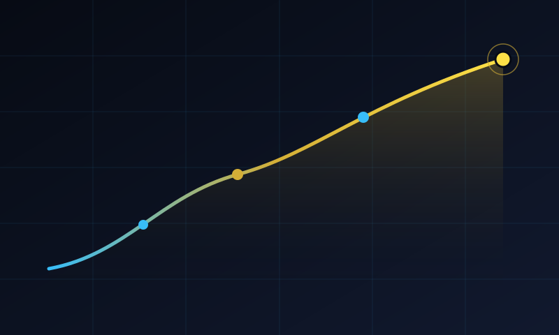

01
Customer Churn Prediction
نظام التنبؤ الذكي بسلوك العملاء
تطوير نموذج تعلم آلة لتحليل بيانات أكثر من 50 ألف عميل واكتشاف مؤشرات المغادرة المبكرة، مما ساهم في رفع دقة التنبؤ وتقليل فقدان العملاء.
93.4%
دقة التنبؤ
−21%
فقدان العملاء